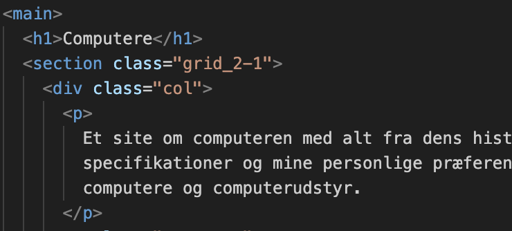

Grundlæggende web
Studiestartsprøven
I studiestartsprøven dykkede vi ind i verdenen af HTML og CSS. Vi lærte, hvordan disse sprog former fundamentet for websider og hvordan de kan bruges til at skabe cool layouts. Vi legede især med Grid og Flexbox, og finjusterede vores design med margin og padding.
Vi fik også styr på, hvordan man gør en hjemmeside "responsiv", hvilket betyder at den ser godt ud på alle skærmstørrelser. Dette involverede at lære om media queries, som lader os tilpasse vores design til forskellige enheder.
Media queries tillader os at definere forskellige regelsæt og stilarter, der aktiveres under forskellige betingelser, hvilket sikrer, at vores hjemmeside forbliver brugervenlig på tværs af forskellige enheder og skærmstørrelser.
Link til hjemmesideTema 2 nøgleord
Vi dykkede ned i de grundlæggende designteorier i webdesign. Vi snakkede om visuelt flow, som handler bla. om størrelser, farver og gentagelser på en hjemmeside for at skabe en behagelig brugeroplevelse. Vi gik især i dybden med Gestaltlove, fordi de hjælper med at forstå, hvordan vores hjerner opfatter og organiserer visuelle elementer på en side.
Vi lærte også om forskellige billedeformater og hvornår man skal bruge dem. Det er vigtigt, fordi det sikrer, at vores billeder ser skarpe og klare ud på forskellige enheder og skærmstørrelser.
Vi lærte om at lave flexboxe, container og items, som er med til at gøre det nemmere at arrangere og justere elementer responsivt samt layoutet
Endelig snakkede vi om forskellige designtile og hvorfor det er vigtigt at vælge den rette stil til ens projekt. Vi lærte at analysere stilarter ved at beskrive de valg, der er blevet truffet, og identificere nøgleord, der definerer stilen.
Link til mobilLidt af kodningen;
Her ses en definitons liste som kan laves på mange måder. Den bruges til at gruppere par af definitioner, hvor hver (dt) er efterfulgt af en beskrivelse (dd)

Det her er en af måderne vi har lært at sætte noget i et grid-layout, section class er med til at strukture indholdet. Hvor div class col er med til at angive en kolonne i layoutet
Herunder viser vi hvordan vi styler grid_2-1 i CSS som vi har defineret, og der har vi lært at bruge dem som ses på billedet. Hvor 2fr og 1fr betyder at den første kolonne vil være så dobbelt som den anden kolonne